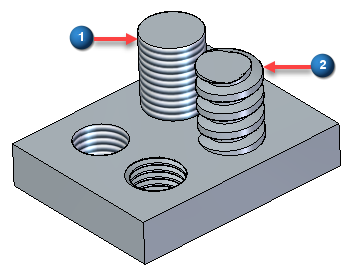

Physical Thread command
Use the 3D Print tab→Prepare group→Physical Thread command to convert cosmetic threads into physical threads. The command works both for internal and external threads. Convert all threads in a document by selecting the Select All button on the Physical Thread command bar.
You can switch between cosmetic (1) and physical (2) threads on both new and existing features using the Physical Thread button on the Hole command bar.

The 3D Print→Prepare→Physical Thread command is enabled by default for use in 3D printing applications. However, creating thread geometry can impact system performance.
The system administrator can disable the Physical Thread creation options for the organization. On the SE Admin utility, change the setting for EnablePhysicalThread. Set it to No to disable and Yes to enable.
When enabled, the use of the Physical Thread option displays a warning message.
Physical thread option is recommended for 3D printing. Enabling physical thread option may cause performance impact. Do you want to continue?
The Physical Thread command is disabled for holes created with hole diameter options, Tap Drill Diameter or Nominal Diameter. When trying to use these options, there is not enough material to remove from the hole in order to create correct physical threads as per thread standard.
For creating physical thread correctly, the hole needs to be created with Internal Minor Diameter. This is also true for external threads.
Physical Thread is only available for Standard Thread and not available for Straight Pipe Thread and Tapered Pipe Thread.
How do I
Print directly to a 3D printerOpen a Solid Edge file in 3D Builder
Scale a model for 3D printing
Save a 3D print file to disk
Create a 3D Print material
Validate a 3D print model
Check wall thickness for 3D print
Learn more
Printing solid modelsUsing the 3D Print page
Look up more details
Selecting a file format for additive manufacturingOverhang command
Overhang command bar
Print Material command
Print Validations command
Print Validations dialog box
Wall Thickness command
Wall Thickness command bar
Physical Thread command bar
Reorient command
Reorient command bar
Quick links
Working with .stl documents in Solid EdgeExport Options for STL (.stl) dialog box
Export Options for 3MF dialog box
Related Topics
Delete Voids commandDelete Voids command bar